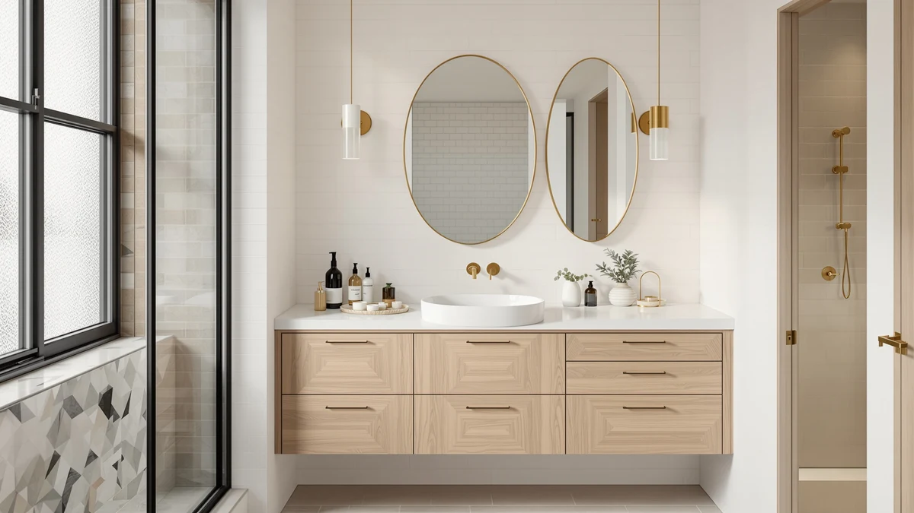

Quick Answer
Amazon is the best store for bathroom vanities if you want a wide selection, documented pricing, and an easy return window in one place. Among the seven vanities and storage cabinets we compared there, the Homhedy Farmhouse Bathroom Storage Cabinet is our top pick. It gives you farmhouse-style storage at $79.99 without the price tag of a full vanity-and-sink combo.
Our pick: Homhedy Farmhouse Bathroom Storage Cabinet — $79.99 Check Price on Amazon
Things to Know Before You Buy
- Amazon lists complete specs and pricing up front. Every product in this comparison has a documented price, material, and set of dimensions, details that are harder to compare across in-store displays at big-box bathroom vanity stores.
- MDF, or engineered wood, is the standard build material. Six of the seven products we compared use MDF cabinet construction, so the price gaps mostly reflect size, hardware, and finish rather than a different core material.
- Price spans from $14.45 to $319.99. The DIY Cabinet Building for Beginners guide sits at the low end for buyers who'd rather build their own cabinet, while the eclife 36-inch vanity with sink combo tops the list as a complete, ready-to-install unit.
- Not every listing here is a finished vanity. Some picks below are storage cabinets, a wall mirror, or a DIY guide rather than full vanity-and-countertop combos, so check the specs table for each product before assuming it includes a sink or faucet.
- Measure your space before ordering from any bathroom vanity store. Widths in this comparison run from a 23.6-inch storage cabinet to a 36-inch single-sink vanity, and returns on assembled furniture get expensive fast if a cabinet doesn't clear your doorway or plumbing rough-in.
The best stores for bathroom vanities aren't always the big-box chains that come to mind first. Home Depot, Lowe's, and Wayfair all stock bathroom vanities, but their online listings tend to hide pricing details, real dimensions, and product specifics behind slow-loading pages or in-store-only inventory. Amazon has become the store many shoppers default to instead, since it pairs a wide selection of vanities and storage cabinets with documented pricing you can check before you buy, along with fast shipping and an easy return window if a cabinet doesn't fit your bathroom the way the listing photos suggested.
We compared seven bathroom vanities and storage cabinets sold through one of the best stores for bathroom vanities, ranging from a $14.45 DIY cabinet-building guide to a $319.99 36-inch vanity with a sink combo included. Our top pick, the Homhedy Farmhouse Bathroom Storage Cabinet, earned that spot at $79.99 by combining farmhouse styling with enough adjustable storage for a small or midsize bathroom, without the four-figure price some vanity sets carry.
Below, you'll find what to check before buying from any bathroom vanity store, how we picked and compared these seven options, and a full breakdown of what each one gets right and where it falls short. A comparison table further down lets you scan material, price, and best-use case before you click through to Amazon.
Why You Should Trust Us
Ilane Tall covers home and bath products for Best Bathroom Vanities, where she researches vanities, storage cabinets, and the stores that sell them for a US audience. For this guide, she and the editorial team compared publicly listed specs, pricing, and product details for seven vanities and storage cabinets sold through one of the best stores for bathroom vanities, Amazon, instead of relying on manufacturer marketing copy. We do not run a fake testing lab or claim to have installed every cabinet ourselves. Instead, we cross-reference dimensions, materials, and pricing so you can decide which of these picks, or which bathroom vanity store, fits your project before you buy.
How We Picked
To find the best stores for bathroom vanities and the products worth buying from them, we started with vanities and storage cabinets from our product database that come with documented pricing, materials, and dimensions rather than vague or missing specs. We included a mix of formats, from complete vanity-and-sink units to standalone storage cabinets, a matching mirror, and even a DIY cabinet-building guide, since shoppers researching bathroom vanity stores are often comparing several different purchase types in the same session. We prioritized a spread of budgets, from under $15 to slightly more than $300, so this guide works whether you're outfitting a rental bathroom or a full remodel. Finally, we checked configuration (farmhouse cabinet, pedestal-sink storage, freestanding vanity, vanity-with-sink combo) to make sure the seven finalists represent distinct options rather than near-duplicates of the same product.
How We Compared
We are a research-based review site, so we compared these seven products using the specs, pricing, and product details published by the store selling them rather than installing units ourselves. We lined up material, stated dimensions, and price side by side to see where each pick earns its cost, and we read through the listed product details to flag which cabinets include a sink, faucet, or mirror and which ship as storage-only pieces. When a listing's title implies more than the specs confirm, we call that out in the drawbacks below. That's the standard behind every comparison in this guide to the best stores for bathroom vanities: a published spec sheet and a documented price, not a physical impression of the product.
Our Picks

Homhedy Farmhouse Bathroom Storage Cabinet
What we like
- Two doors and an adjustable shelf let you reconfigure the interior for towels, toiletries, or extra paper goods
- Rustic walnut finish and farmhouse hardware match a popular design trend other picks here don't offer
- At $79.99, it's the least expensive complete storage cabinet in this comparison
Flaws but not dealbreakers
- MDF, or engineered wood, construction means spills near the base should be wiped up quickly
- It's a storage cabinet, not a vanity with a sink, so it won't replace your existing vanity outright
| Material | MDF / engineered wood |
| Size | 11.8"D x 23.6"W x 31.5"H |
The Homhedy Farmhouse Bathroom Storage Cabinet is our top pick among the best stores for bathroom vanities because it solves a narrow problem well: you want farmhouse styling and real storage, not a full vanity-and-sink replacement. At 23.6 inches wide, 11.8 inches deep, and 31.5 inches tall, the listing specifies two doors and an adjustable interior shelf, so you can rearrange the space for towels, toilet paper, or cleaning supplies as your needs change. The rustic walnut finish and farmhouse-style pulls give it a look that the plainer white cabinets in this comparison don't try to match.
At $79.99, the Homhedy costs a fraction of the $215.99-to-$319.99 vanities further down this list, which makes it the pick to reach for when you want a style upgrade without remodel-level spending. The listing also notes it suits kitchens, laundry rooms, and living rooms, not only bathrooms, so it's a flexible buy if you're furnishing more than one space. Like most of the products we compared, it's built from MDF, or engineered wood, which holds up fine in normal bathroom humidity but shouldn't sit in standing water near the base.

30 Inch Bathroom Vanity with
What we like
- Ships as a complete vanity-and-sink combo, so there's no separate countertop or basin to source
- Three drawers offer more storage than the single-door cabinets elsewhere in this comparison
- Traditional black finish suits a classic bathroom rather than the farmhouse or modern looks of other picks
Flaws but not dealbreakers
- At $215.99, it costs nearly three times as much as the Homhedy storage cabinet above
- 30-inch width and 18.3-inch depth still need to be measured against your existing plumbing rough-in before you order
| Material | MDF / engineered wood |
| Size | 18.3"D x 30"W x 34"H |
The Mirightone 30 Inch Bathroom Vanity with Sink is our runner-up because it's a complete package: cabinet, countertop, and sink basin sold as one 30-inch unit rather than pieces you have to match yourself. The listing specifies three drawers, which beats the single-door storage layout most other cabinets in this guide offer, plus a traditional black finish that reads more formal than the farmhouse or shaker styles nearby.
At $215.99, it sits in the middle of this comparison's price range, well above the Homhedy storage cabinet but below the eclife and LDarqeer vanities further down. Because it's sold as a vanity-and-sink combo rather than a cabinet alone, the total cost of a finished setup runs lower than buying a cabinet, countertop, and basin separately from three different bathroom vanity stores. At 18.3 inches deep and 30 inches wide, it's sized for a standard single-sink bathroom, so measure your rough-in before ordering.

Keonjinn 24x30 Inch Brushed Nickel
What we like
- 24x30-inch rectangle sizing matches the width of several vanities in this comparison, including the Mirightone and LDarqeer
- Brushed nickel frame pairs with modern and transitional bathroom hardware
- At $69.99, it's one of the least expensive picks in this guide
Flaws but not dealbreakers
- It's a mirror, not a vanity or storage cabinet, so it doesn't add counter space or storage on its own
- Fixed rectangle dimensions won't fit every vanity width
| Material | MDF / engineered wood |
| Size | 30"L x 24"W |
The Keonjinn Bathroom Mirror is the one product in this comparison that isn't a vanity or storage cabinet, and we included it because plenty of shoppers researching the best stores for bathroom vanities are also replacing the mirror above the sink at the same time. Its brushed nickel frame and rectangle shape at 24 by 30 inches line up with the 30-inch vanities elsewhere in this guide, including the Mirightone and LDarqeer picks.
At $69.99, it's priced closer to the Homhedy storage cabinet than to the full vanity-and-sink combos, which tracks with it being a lighter, simpler product. If your existing vanity cabinet is in good shape and only the mirror looks dated, this is the cheaper fix compared to replacing the whole unit. Confirm your wall space and mounting hardware match a 24-by-30-inch rectangle before ordering.

DIY CABINET BUILDING FOR BEGINNERS:
What we like
- At $14.45, it's by far the cheapest way onto this list, a fraction of even the least expensive finished cabinet
- Covers cut lists, installation, and finishing steps specifically for bathroom vanities, not only kitchen cabinets
- Useful even if you end up buying a finished vanity, since it explains what installation actually involves
Flaws but not dealbreakers
- It's a book, not a physical cabinet, so you'll still need to source materials and hardware separately
- Building your own vanity takes tools, time, and skill that buying a finished unit skips entirely
| Material | MDF / engineered wood |
| Size | — |
DIY Cabinet Building for Beginners earns the budget pick spot for a different reason than the other products here: it isn't a vanity at all. It's a $14.45 guide that walks you through building one yourself. The listing covers kitchen cabinets, bathroom vanities, garage storage, and built-ins, with cut lists, installation steps, and finishing instructions specific to each project type.
For a reader comparing the best stores for bathroom vanities against building a custom one, this guide is the cheapest entry point on the list by a wide margin, costing less than a fifth of the next-cheapest cabinet. It won't save you money on lumber, hardware, or a countertop, and it assumes some comfort with basic tools. But if your bathroom has an unusual layout that off-the-shelf vanities from Homhedy, Mirightone, or eclife don't fit, this option lets you build to your exact measurements instead of compromising on a stock size.

LDarqeer 30 Inch Freestanding Bathroom
What we like
- Waterproof lacquer finish is a step up from the plain MDF surface on several other picks
- Shaker-style grey cabinet with two drawers and a single door suits small-space layouts
- Listed specifically as space-saving for small bathrooms and apartments, matching a common search for this size vanity
Flaws but not dealbreakers
- At $249.99, it's the second-most expensive product in this comparison
- Two drawers and one door offer less storage than the three-drawer Mirightone vanity at a lower price
| Material | MDF / engineered wood |
| Size | 30" |
The LDarqeer 30 Inch Freestanding Bathroom Vanity targets a specific shopper: someone in a small bathroom or apartment who still wants a real sink-and-cabinet vanity rather than a wall-mounted or pedestal setup. Its shaker-style grey cabinet includes two drawers and a single door, and the listing specifies a waterproof lacquer finish, a detail several other MDF cabinets in this guide don't call out.
At $249.99, it costs more than the similarly sized Mirightone vanity, even though the Mirightone's three drawers offer more storage for less money. The trade-off is the waterproof lacquer finish and the shaker style, which reads more transitional than the black Mirightone or the farmhouse Homhedy. If you've specifically been searching for a 30-inch freestanding vanity sized for a small apartment bathroom, this pick is built around that exact use case.

TEENFON Pedestal Sink Storage Cabinet
What we like
- Designed specifically to fit around a pedestal sink, a layout none of the other cabinets in this guide address
- Two doors and an interior shelf add storage where a pedestal sink normally offers none
- At $74.99, it's priced close to the Homhedy cabinet, well under the full vanity-and-sink combos
Flaws but not dealbreakers
- Only works if you already have a pedestal sink; it's not a fit for a standard vanity cabinet layout
- White finish is plainer than the farmhouse, shaker, or black finishes on other picks
| Material | MDF / engineered wood |
| Size | 2 Doors |
Pedestal sinks look clean but leave you with nowhere to store anything, which is the exact gap the TEENFON Pedestal Sink Storage Cabinet fills. Its listing describes two doors and a shelf built to wrap around the base and plumbing of a pedestal sink rather than replace it, so it works alongside a fixture you're keeping instead of swapping out.
At $74.99, it's priced close to the Homhedy farmhouse cabinet and well under the full vanity-and-sink units from Mirightone, LDarqeer, and eclife, since it solves a smaller problem: storage, not sink or countertop replacement. The plain white finish won't make the same design statement as the farmhouse or shaker cabinets in this guide, but if a pedestal sink is the one part of your bathroom you're not replacing, this pick is built around that constraint.

eclife 36" Bathroom Vanities with
What we like
- 36-inch width is the widest cabinet in this comparison, with more counter and storage than the 30-inch options
- Ships with an undermount black sink and a matching matte black faucet and drain already specified
- Thickened wood construction is called out specifically in the listing, distinct from the standard MDF panels on cheaper picks
Flaws but not dealbreakers
- At $319.99, it's the most expensive product in this comparison
- 36-inch width won't fit the small bathrooms the LDarqeer and TEENFON picks are built for
| Material | MDF / engineered wood |
| Size | 36" Single |
The eclife 36-inch Bathroom Vanity with Sink Combo is the most complete package in this comparison: a wider cabinet, an undermount black sink, and a matte black faucet and drain sold as one unit. At 36 inches, it's six inches wider than the Mirightone and LDarqeer vanities, which translates into more counter space and cabinet storage for a primary bathroom rather than a powder room or apartment layout.
At $319.99, it's the most expensive product we compared, but the price includes the sink, faucet, and drain hardware already matched to the cabinet's modern black finish, so there's no separate fixture shopping to do. The listing specifies thickened wood construction, which eclife calls out as a step up from the standard MDF panels used in several cheaper picks here. If your bathroom has the floor space for a 36-inch cabinet and you want a finished, modern black look, this pick needs the least additional shopping to complete.
Quick Comparison
| Product | Material | Price | Rating | Best for | Get it |
|---|---|---|---|---|---|
| Homhedy Farmhouse Bathroom Storage Cabinet | MDF / engineered wood | $79.99 | 4 | Extra storage on a small budget | View on Amazon → |
| 30 Inch Bathroom Vanity with | MDF / engineered wood | $215.99 | 4 | Complete 30-inch sink-and-cabinet combo | View on Amazon → |
| Keonjinn 24x30 Inch Brushed Nickel | MDF / engineered wood | $69.99 | 4 | Mirror to pair with a 24-30 inch vanity | View on Amazon → |
| DIY CABINET BUILDING FOR BEGINNERS: | MDF / engineered wood | $14.45 | 4 | DIYers building a custom vanity | View on Amazon → |
| LDarqeer 30 Inch Freestanding Bathroom | MDF / engineered wood | $249.99 | 4 | Small bathrooms and apartments | View on Amazon → |
| TEENFON Pedestal Sink Storage Cabinet | MDF / engineered wood | $74.99 | 4 | Adding storage around a pedestal sink | View on Amazon → |
| eclife 36" Bathroom Vanities with | MDF / engineered wood | $319.99 | 4 | Widest, most complete 36-inch combo | View on Amazon → |
The Competition
Beyond the seven products featured above, we looked at several other bathroom vanities and storage cabinets from the same store before narrowing this list. A handful of listings had appealing photos but missing or inconsistent dimensions, which made it impossible to confirm whether they'd fit a standard bathroom rough-in. We also passed on a few vanity-and-sink combos where the price varied across nearly identical size variants, making it hard to tell what a specific configuration would cost at checkout. Some wall-mounted and floating vanities looked promising on paper but required stud or blocking specifications the listings didn't provide, a detail that matters more for that mounting style than for the freestanding and pedestal-adjacent picks in this guide. If you want a wider set of finished vanity options at different price points, our full bathroom vanities roundup covers additional picks we didn't include here. Across the stores we checked, Homhedy's Farmhouse Bathroom Storage Cabinet remains our pick for the best stores for bathroom vanities overall, thanks to its price and adjustable storage.